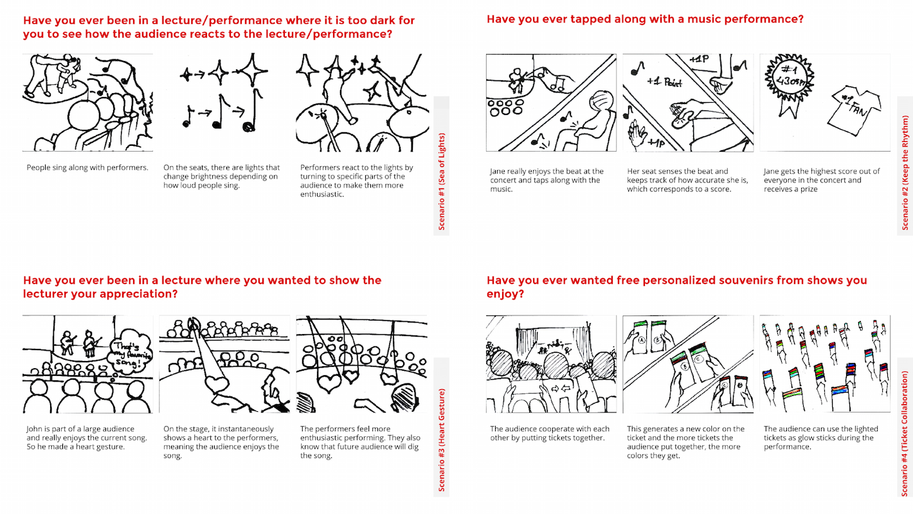

Product Concept
2014
Group Project with Winnie Leung and Tugrul Yuksel
Project Requirements
The project guideline required us to design a Ubicomp service-system that supports the needs and desires of a target set of users. The settings we could explore were "a stadium, auditorium, gymnasium, or coliseum that supports large-scale group interaction pertaining to either sports or music".
Design Process
Guerilla Observations
Our team went on guerilla observations in a few concerts. We visited a Beatles Tributeconcert held in a large-scale venue (Heinz Hall in Pittsburgh) and a few smaller-scaled concerts happened in medium-sized bars and auditoriums. We found that people's behavior changed as the size of the venues varied. In small venues, people were more comfortable socializing with people physically close to them. And the social interactions, in turn, made the performance more enjoyable to the audiences. For performances held in large-scale venues (normally could room hundreds of thousads of people), we observed that people did not fully enjoy themselves and felt uncomfortable to participate in the concert or interact with the performers.

Speed-dating
After speed-dating a few ideas, we wanted to build a smart ticket that could offer feedback and encouragement to the audience whenever they participate in a concert, e.g., clapping along to the beats or shouting band menbers' names. To increase value in the ticket after the concert, we added an invisible message on the back of the ticket. We envisioned it to be a pleasant surprise that can remind people of the fun time they have during the concert.

{kind=link}
Final Delivery
Our final delivery was the concept video sketch.